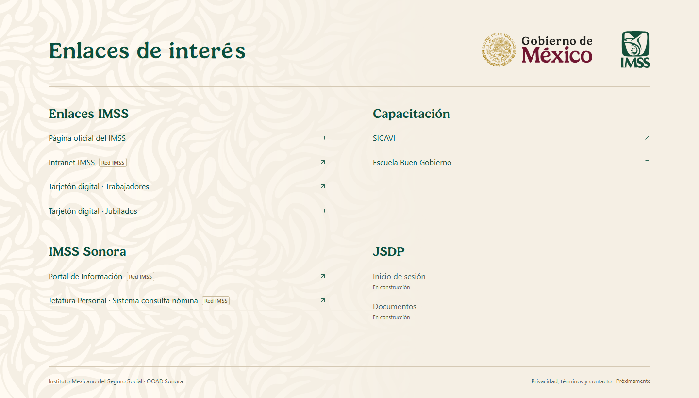
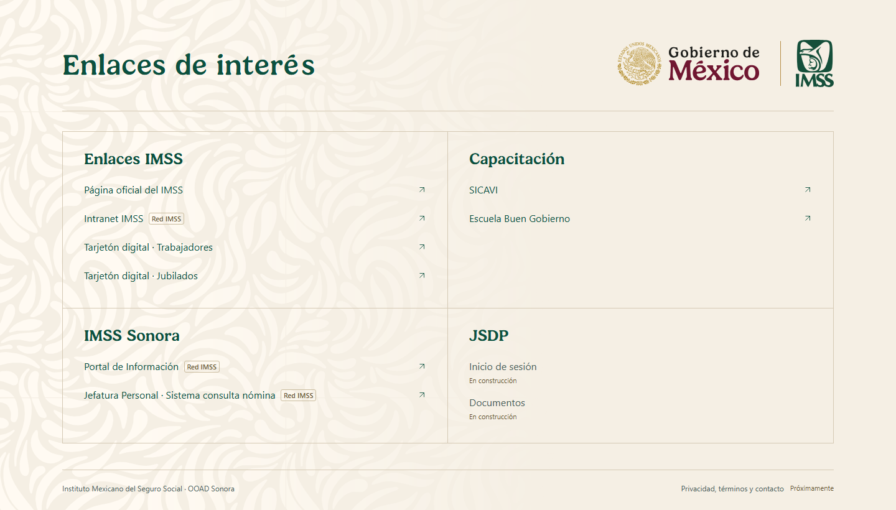
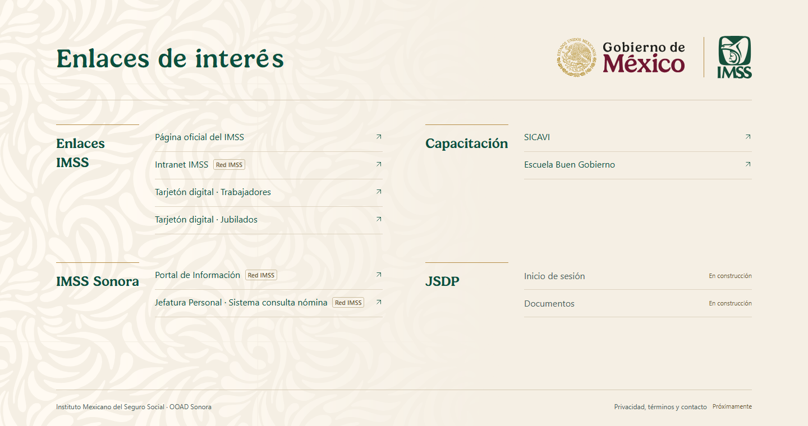

Cabecera de C + bloques de B
Tres propuestas con “Enlaces de interés” a la izquierda y los logotipos oficiales a la derecha. Debajo, los enlaces se organizan en cuatro bloques: IMSS y Capacitación en la primera fila; IMSS Sonora y JSDP en la segunda.
Todas conservan el mismo fondo crema, patrón, tipografía y recursos originales. Inicio de sesión y Documentos aparecen en construcción.
F · Combinación abierta
Cabecera de C y cuadrícula abierta de B, con dos columnas, dos filas y separación amplia entre grupos.



G · Cuadrícula delimitada
La misma cabecera y los mismos cuatro bloques, definidos por líneas finas y márgenes interiores.



H · Directorio editorial
Cuatro bloques en dos filas, con el nombre de cada categoría a la izquierda de sus enlaces para un cierre más compacto.
